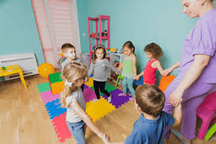
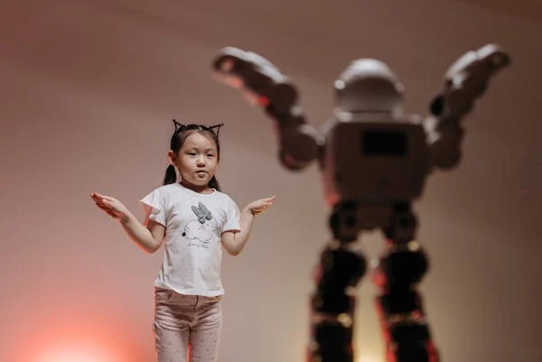
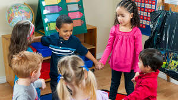

Importance of Movement and Music
Play with focus on movement also has significance in the development of young children and music and movement assists them to improve their fine motor skills, sense of timing and emotional control. In physical activity, they are able to achieve gross motor skills such as balance, strength and coordination as well as music improves their timing, rhythm and their ability to distinguish tones. When children sing, dance or play instruments they are in a position to ease on feelings, stresses and even regulate their feelings. Through music, children’s brains are also developed for language, memory and even their attention span. People learn trough physical activity and movements, and combining it with music and feelings let the children develop their social-emotional skills to improve their social and emotional well-being. Through dancing in the course of doing other activities children realize that movement and music combined with other activities help to attain increased level of confidence in exploring other aspects of personal development thus fostering creativity, asserting individuality and social interaction.
Theories and Perspectives
There are two well known methods of early childhood music education which are Dalcroze Eurhythmics and Orff Schulwerk both of which involve the child the in the making of music and movement. Dalcroze Eurhythmics developed by Émile Jaques-Dalcroze teach s student to move along with the notes in order to develop better rhythm and space perception as well as listening abilities. Children can dance along with music and so are fully involved into feeling and adapting to the rhythms and structures of music. Orff Schulwerk an approach initiated by Carl Orff is associated with creativity incorporated in the active involvement of students. This compels children to sing, move and even play musical instruments to create their own music with small amounts of training. Both methods suggest the active involvement of children in learning process, since they develop the means to understand what they are learning through own experience and actual movement in rhythm, melody, and dynamics. These theories build creativeness, teamwork and confidence to the young learners.
Resources and Tools
For the purpose of creating a dynamic learning environment for movement and music in early childhood education following equipment is a necessity. For examples, tambourines, xylophones and maracas allow children to have first-hand experiences on sound, pitch and beat. Of the Rhythm apps, Rhythm Cat and Toca Dance can be described as applications that present the child with the sequence of rhythm exercises and dance sequences with the help of which he or she will gradually acquire the feeling of timing. Furthermore, technologies of interactive sound design for children, for instance, GarageBand, enable learners to practice setting up sounds for learning music promotion through the provision of repetitive sound call and the learner creates or records music. These resources create an ongoing play style which allows children to freely explore the sounds, instruments, and movements that in turn yield a extensive comprehension of rhythm and body control that is musical in nature.
Learning Experiences
0-2 Years
At this stage, there is simply clapping to rhythms as an appropriate involvement of the infants and toddlers in making music. Both parents or caregivers can assist the kids to clap to any music or rhythmic sounds so that the children develop the earliest sense of time.
2-3 Years
Many toddlers like moving their bodies with the help of scarves and these toys can help children develop their gestures and spontaneity. The scarves ensure that children may comprehend rhythm as they act as visual representations besides enhancing the children’s spatial awareness, balancing and their motor mastery.
3-5 Years



Choral recitation is an entertaining game for preschoolers because children learn how to sing in a group. It is useful for enhancing the speech and memory of children and for letting them freely practice using the pitch and tones.
6-8 Years
By early-elementary, children can learn how to write simple melodies and can use instruments or technology apps such as GarageBand. This creative experience enhances musical awareness of structural aspects of music, sounds’ connections and fosters ensemble music making with others.